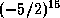

Common Lisp the Language, 2nd Edition
A ratio is a number representing the mathematical ratio of two integers. Integers and ratios collectively constitute the type rational. The canonical representation of a rational number is as an integer if its value is integral, and otherwise as the ratio of two integers, the numerator and denominator, whose greatest common divisor is 1, and of which the denominator is positive (and in fact greater than 1, or else the value would be integral). A ratio is notated with / as a separator, thus: 3/5. It is possible to notate ratios in non-canonical (unreduced) forms, such as 4/6, but the Lisp function prin1 always prints the canonical form for a ratio.
If any computation produces a result that is a ratio of two integers such that the denominator evenly divides the numerator, then the result is immediately converted to the equivalent integer. This is called the rule of rational canonicalization.
Rational numbers may be written as the possibly signed quotient of decimal numerals: an optional sign followed by two non-empty sequences of digits separated by a /. This syntax may be described as follows:
ratio ::= [sign] {digit}+ / {digit}+
The second sequence may not consist
entirely of zeros.
For example:
2/3 ;This is in canonical form 4/6 ;A non-canonical form for the same number -17/23 ;A not very interesting ratio -30517578125/32768 ;This is  10/5 ;The canonical form for this is 2
To notate rational numbers in radices other than ten, one uses the same radix specifiers (one of #nnR, #O, #B, or #X) as for integers. For example:
#o-101/75 ;Octal notation for -65/61 #3r120/21 ;Ternary notation for 15/7 #Xbc/ad ;Hexadecimal notation for 188/173 #xFADED/FACADE ;Hexadecimal notation for 1027565/16435934